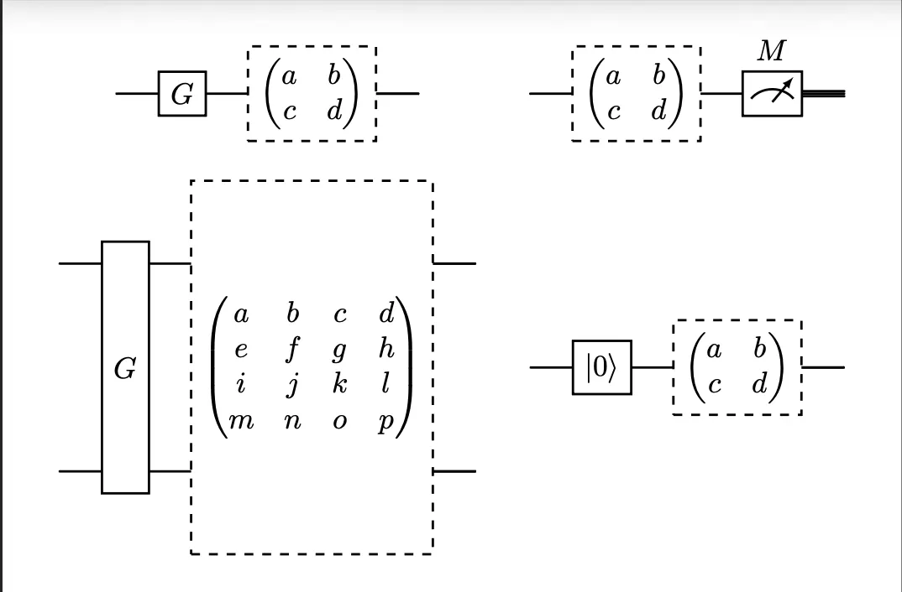

The Digitisation of Quantum Errors
So far, we have learnt how to detect and correct both bit-flips and phase errors using Shor's code. We also understand that quantum errors are continuous and there are infinitely many ways to corrupt the state we are trying to protect. This begs the question: why have we been fixated only on detecting and correcting bit-flips and phase errors? It turns out that being able to detect and correct bit-flips and phase errors is enough to correct any arbitrary single-qubit error.
The Bloch Sphere
To begin, let's introduce the Bloch sphere. We have been representing the state of a qubit as \(|\psi\rangle = \alpha|0\rangle + \beta|1\rangle\). We can rewrite this in a different form:
\[ |\psi\rangle = \cos\frac{\theta}{2}|0\rangle + e^{i\phi}\sin\frac{\theta}{2}|1\rangle \]The probability amplitudes still satisfy the usual normalisation condition. In this form, every possible qubit state corresponds to a point on the surface of a sphere, determined by the two angles \(\theta\) and \(\phi\), called the Bloch sphere.

An error acting on a qubit can be pictured as a rotation: it moves the state from one point on the sphere to another. More precisely, an error takes the form:
\[ U(\delta\theta,\, \delta\phi)\,|\psi\rangle = \cos\frac{\theta + \delta\theta}{2}|0\rangle + e^{i(\phi + \delta\phi)}\sin\frac{\theta + \delta\theta}{2}|1\rangle \]where \(\delta\theta\) and \(\delta\phi\) describe how far the state has been displaced. Since these shifts can be any real numbers, the space of possible errors is continuous and infinite. At first glance, correcting all of these errors seems to require a vastly complex procedure. Luckily, it does not. Quantum errors can be digitised.
The Pauli Matrices
To understand digitisation, we first need to introduce the Pauli matrices — a set of four simple quantum operations that act on a single qubit:
\[ I = \begin{pmatrix} 1 & 0 \\ 0 & 1 \end{pmatrix}, \quad X = \begin{pmatrix} 0 & 1 \\ 1 & 0 \end{pmatrix}, \quad Y = \begin{pmatrix} 0 & -i \\ i & 0 \end{pmatrix}, \quad Z = \begin{pmatrix} 1 & 0 \\ 0 & -1 \end{pmatrix} \]The \(X\) gate is the quantum analogue of a classical bit flip: it sends \(|0\rangle\) to \(|1\rangle\) and \(|1\rangle\) to \(|0\rangle\). The \(Z\) gate, called a phase flip, has no classical analogue: it leaves \(|0\rangle\) unchanged and sends \(|1\rangle\) to \(-|1\rangle\). On the Bloch sphere, \(X\) corresponds to a \(\pi\) rotation about the \(x\)-axis, and \(Z\) to a \(\pi\) rotation about the \(z\)-axis.
The key fact is this: any single-qubit error can be written as a linear combination of these four operations:
\[ U(\delta\theta,\, \delta\phi)\,|\psi\rangle = \alpha_I\, \mathbb{1}|\psi\rangle + \alpha_X\, X|\psi\rangle + \alpha_Z\, Z|\psi\rangle + \alpha_{XZ}\, XZ|\psi\rangle \]The error, however complicated, is always a superposition of just four possibilities: no error, a bit flip, a phase flip, or both simultaneously.
Projective Measurement
Knowing this decomposition is only useful if we can act on it. The key step is to perform a projective measurement — one that forces the corrupted qubit to collapse into exactly one of these four error branches.
Rather than measuring the data qubit directly, which would destroy the encoded information, we introduce an ancilla qubit and allow it to interact with the data qubit in a carefully chosen way. We then measure only the ancilla. The measurement result, called the syndrome, tells us which branch the error collapsed into, without ever revealing what the logical qubit's state actually was.
If the syndrome indicates no error has occurred, we do nothing. If it indicates an \(X\) error, we apply \(X\) to undo it. If it indicates a \(Z\) error, we apply \(Z\). If it indicates both, we apply \(Z\) followed by \(X\). In every case, we can correct the error exactly.
This is the miracle of digitisation: even though quantum errors are continuous, a well-chosen measurement collapses them into a discrete set. We never need to correct infinitely many error types — only three.
The same logic extends to two-qubit errors. Any noise acting on a pair of qubits can equally be decomposed in terms of \(X\) and \(Z\) gates, now acting on each qubit individually or jointly. So even for two-qubit interactions, we only ever need to detect and correct bit flips and phase flips.
What the Hardware Must Guarantee
Digitisation simplifies the software side of error correction enormously. But it does not eliminate hardware requirements. For this error model to apply, the physical device must satisfy two conditions:
- True two-level systems. Each qubit must have a computational basis of exactly \(|0\rangle\) and \(|1\rangle\), with no leakage into higher energy levels.
- Circuit-level noise. We must be able to model noise as occurring at specific moments in the circuit: after single-qubit gates, after two-qubit gates, before measurements, and after initialisation.

If these conditions hold, then detecting and correcting bit flips and phase flips in software is sufficient. All remaining errors are either already in this form or collapse into it upon measurement.
If the hardware can be trusted to produce only \(X\) and \(Z\) errors, the software can handle the rest.
Next, we will introduce Stim, a tool used for the simulation of quantum error correction protocols, and use it to simulate Shor's code under different error conditions.